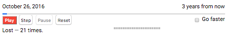
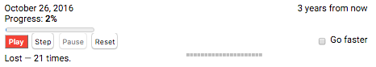
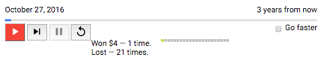
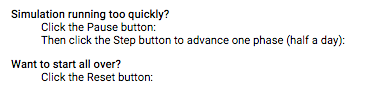
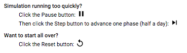
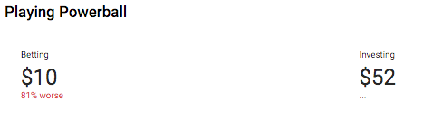
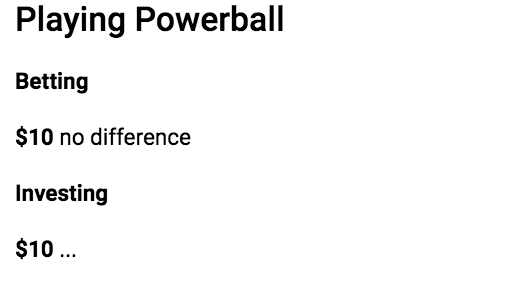

Step 2: Start Using AngularDart Components 1.0
<?code-excerpt path-base=”examples/acx/lottery”?>
In this step, you’ll change the app to use a few of the AngularDart Components:
<material-icon><material-progress><acx-scorecard>
Run the live example (view source) of the `` version of the app.
Copy the source code
Make a copy of the base app’s source code:
> cp -r 1-base myapp
> cd myapp
> pub get
From now on, you’ll work in this copy of the source code, using whatever Dart web development tools you prefer.
Depend on angular_components
-
Edit
pubspec.yamlto add a dependency toangular_components:<?code-excerpt “1-base/pubspec.yaml” diff-with=”2-starteasy/pubspec.yaml” to=”dev_dependencies”?>
--- 1-base/pubspec.yaml +++ 2-starteasy/pubspec.yaml @@ -7,6 +7,7 @@ dependencies: angular: ^6.0.1 + angular_components: ^1.0.3 intl: ^0.16.1 dev_dependencies: -
Get the new package:
> pub get
Set up the root component’s Dart file
Edit lib/lottery_simulator.dart,
importing the Angular components and informing Angular about
materialProviders
and the material directives used in the template:
<?code-excerpt “1-base/lib/lottery_simulator.dart” diff-with=”2-starteasy/lib/lottery_simulator.dart”?>
--- 1-base/lib/lottery_simulator.dart
+++ 2-starteasy/lib/lottery_simulator.dart
@@ -5,6 +5,7 @@
import 'dart:async';
import 'package:angular/angular.dart';
+import 'package:angular_components/angular_components.dart';
import 'package:intl/intl.dart';
import 'src/help/help.dart';
@@ -24,12 +25,15 @@
templateUrl: 'lottery_simulator.html',
directives: [
HelpComponent,
+ MaterialIconComponent,
+ MaterialProgressComponent,
ScoresComponent,
SettingsComponent,
StatsComponent,
VisualizeWinningsComponent,
],
providers: [
+ materialProviders,
ClassProvider(Settings),
],
)
Now you’re ready to use the components.
Use material-progress
Edit the template file lib/lottery_simulator.html to use the
<material-progress> tag
(MaterialProgressComponent).
The diffs should look similar to this:
<?code-excerpt “{1-base,2-starteasy}/lib/lottery_simulator.html” from=”Progress” to=”/material”?>
--- 1-base/lib/lottery_simulator.html
+++ 2-starteasy/lib/lottery_simulator.html
@@ -26,2 +26,2 @@
- Progress: <strong>{{progress}}%</strong> <br>
- <progress max="100" [value]="progress"></progress>
+ <material-progress [activeProgress]="progress" class="life-progress">
+ </material-progress>
Run the app, and you’ll see the new progress bar stretching across the window:

As a reminder, here’s what the progress section looked like before:

That change is barely noticeable. You can make a bigger difference by adding
images to the buttons, using the <material-icon> component.
Use material-icon in buttons
Using <material-icon>
(MaterialIconComponent)
is similar to using <material-progress>,
except that you also need
material icon fonts.
You can find icons and instructions for including them at
design.google.com/icons.
Use the following icons in the main simulator UI:
| Current button text | New icon | Icon name |
|---|---|---|
| Play | play arrow | |
| Step | skip next | |
| Pause | pause | |
| Reset | replay |
-
Find the icon font value for play arrow:
- Go to design.google.com/icons.
- Enter play or play arrow in the site search box.
- In the results, click the play arrow icon to get more information.
- Click ICON FONT to get the icon code to use: play_arrow.
-
Find the icon font values for skip next, pause, and replay.
-
Edit the main HTML file (
web/index.html) to add the following code to the<head>section:<?code-excerpt “1-base/web/index.html” diff-with=”2-starteasy/web/index.html”?>
--- 1-base/web/index.html +++ 2-starteasy/web/index.html @@ -13,6 +13,8 @@ }()); </script> <script defer src="main.dart.js"></script> + <link rel="stylesheet" type="text/css" + href="https://fonts.googleapis.com/icon?family=Material+Icons"> <style> #wrapper { max-width: 600px; -
Edit
lib/lottery_simulator.htmlto change the first button to use a<material-icon>instead of text:- Add an
aria-labelattribute to the button, giving it the value of the button’s text (Play). - Replace the button’s text (Play) with a
<material-icon>element. - Set the
iconattribute to the icon code (play_arrow).
Here are the diffs:
<?code-excerpt “{1-base,2-starteasy}/lib/lottery_simulator.html” from=”play” to=”/button”?>
--- 1-base/lib/lottery_simulator.html +++ 2-starteasy/lib/lottery_simulator.html @@ -31,5 +31,6 @@ <button (click)="play()" [disabled]="endOfDays || inProgress" id="play-button" - >Play + aria-label="Play"> + <material-icon icon="play_arrow"></material-icon> </button> - Add an
-
Use similar changes to convert the Step, Pause, and Reset buttons to use material icons instead of text.
These small changes make a big difference in the UI:

Use material-icon in other components
If you scroll down to the Tips section of the page, you’ll see blank spaces where there should be icons:

The HTML template (lib/src/help/help.html) uses <material-icon> already, so why isn’t it working?
Edit lib/src/help/help.dart to import the AngularDart Components and
register MaterialIconComponent.
<?code-excerpt “1-base/lib/src/help/help.dart” diff-with=”2-starteasy/lib/src/help/help.dart”?>
--- 1-base/lib/src/help/help.dart
+++ 2-starteasy/lib/src/help/help.dart
@@ -3,12 +3,14 @@
// BSD-style license that can be found in the LICENSE file.
import 'package:angular/angular.dart';
+import 'package:angular_components/angular_components.dart';
@Component(
selector: 'help-component',
templateUrl: 'help.html',
styleUrls: ['help.css'],
directives: [
+ MaterialIconComponent,
NgSwitch,
NgSwitchWhen,
NgSwitchDefault,
Adding those two lines to lib/src/help/help.dart makes the material icons display:

Use acx-scorecard
Make one more change: use
<acx-scorecard> (ScorecardComponent)
to display the betting and investing results. You’ll use the
scorecards in the app’s custom ScoresComponent (<scores-component>), which is
implemented in lib/src/scores/scores.*.
-
Edit
lib/src/scores/scores.dartto registerScorecardComponentand thematerialProvidersprovider:<?code-excerpt “1-base/lib/src/scores/scores.dart” diff-with=”2-starteasy/lib/src/scores/scores.dart”?>
--- 1-base/lib/src/scores/scores.dart +++ 2-starteasy/lib/src/scores/scores.dart @@ -3,11 +3,14 @@ // BSD-style license that can be found in the LICENSE file. import 'package:angular/angular.dart'; +import 'package:angular_components/angular_components.dart'; @Component( selector: 'scores-component', styleUrls: ['scores.css'], templateUrl: 'scores.html', + directives: [ScorecardComponent], + providers: [materialProviders], ) class ScoresComponent { /// The state of cash the person would have if they saved instead of betting. -
Edit
lib/src/scores/scores.html(the template file forScoresComponent) to change the Betting section from a<div>to an<acx-scorecard>. Specify the following attributes (documented in theScorecardComponentAPI reference) for each<acx-scoreboard>:-
label:Set this to the string in the div’s<h4>heading: “Betting”. -
class:Set this to “betting”, so that you can use it to specify custom styles. -
value:Set this to the value of thecashproperty ofScoresComponent. -
description:Set this to the second line of content in the div’s<p>section. -
changeType:Set this to the value that[class]is set to, surrounded by{{ }}.
-
-
Similarly, change the Investing section from a
<div>to an<acx-scorecard>. A few notes:-
label:Set this to “Investing”. -
class:Set this to “investing”. -
value:Set this to the value of thealtCashproperty ofScoresComponent. -
description:As before, set this to the second line of content in the div’s<p>section. -
Don’t specify a
changeTypeattribute.
Here are the code diffs for the last two steps:
<?code-excerpt “1-base/lib/src/scores/scores.html” diff-with=”2-starteasy/lib/src/scores/scores.html”?>
--- 1-base/lib/src/scores/scores.html +++ 2-starteasy/lib/src/scores/scores.html @@ -1,15 +1,14 @@ -<div> - <h4>Betting</h4> - <p> - <strong [class]="cash > altCash ? 'positive' : cash < altCash ? 'negative' : 'neutral'">${{ cash }}</strong> - {{ outcomeDescription }} - </p> -</div> +<acx-scorecard + label="Betting" + class="betting" + value="${{ cash }}" + description="{{ outcomeDescription }}" + changeType="{{ cash > altCash ? 'positive' : cash < altCash ? 'negative' : 'neutral' }}"> +</acx-scorecard> -<div> - <h4>Investing</h4> - <p> - <strong>${{ altCash }}</strong> - ... - </p> -</div> +<acx-scorecard + label="Investing" + class="investing" + value="${{ altCash }}" + description="..."> +</acx-scorecard> -
-
Edit
lib/src/scores/scores.css(styles forScoresComponent) to specify that.investingfloats to the right. You can also remove the unneeded.positiveand.negativestyles.<?code-excerpt “1-base/lib/src/scores/scores.css” diff-with=”2-starteasy/lib/src/scores/scores.css”?>
--- 1-base/lib/src/scores/scores.css +++ 2-starteasy/lib/src/scores/scores.css @@ -1,7 +1,3 @@ -.positive { - color: green; -} - -.negative { - color: red; +.investing { + float: right; } -
Refresh the app, and look at the nice new UI:

Remember, it used to look like this:

Problems?
Check your code against the solution in the 2-starteasy directory.